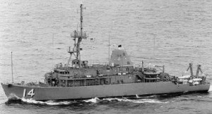
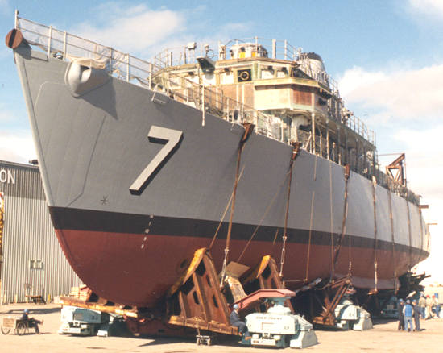
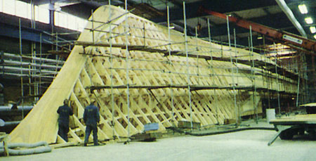
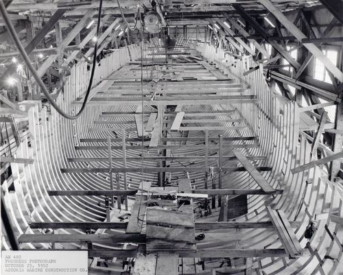
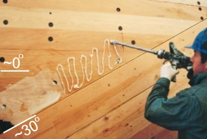

COPYRIGHT Tim Lovett © May 2004
.
.
.
"There is a false idea that amazingly still has some following, that wooden ships were strong because they would flex. In fact, relative movement between structural members allows fresh water to enter the hull structure... " Comment on hogging by Tricoastal Marine, wooden ship builders. http://www.tricoastal.com/woodship.html#hog |
The cold molded hull is formed by multiple layers of planking laid up at different angles. This is the strongest way to plank a hull, and forms an integrated skin capable of sustaining higher loads without troublesome deflections.
MINE HUNTERS
Here is a modern timber ship. It is a mine hunter designed to have almost no magnetic signal. At 224 feet (68m), the Avengers are the longest wooden hulls built for the Navy. The hull is coated with fiberglass which adds more strength and stiffness. Wood has surprisingly good impact strength however, making it suitable for damage control.

Figure 1: USS Chief, Avenger-class wooden minesweeper
Commissioned in 1994

|
There are twelve Avenger mine countermeasures vessels in service with the US Navy. |
http://www.naval-technology.com/projects/avenger/avenger1.html
COLD MOLDED HULL
Layers of angled planking deals with both shear and tensile loading. Far superior to iron bracing under conventional planking, the cold molded hull transfers the loads evenly.
Image Tim Lovett April 2004

|
The construction of the ship starts with the building of a wooden frame, keel upwards. Strips of the core material of the GRP sandwich are placed on the frame. http://www.naval-technology.com/projects/landsort/landsort3.html |

AM 480 under construction, October 25, 1952
When the framing was complete, a
triple layer of fir planking was installed: two opposing diagonal layers, and
one fore and aft (horizontal) layer. Each
layer was fastened to the frames in the conventional way.
The Repair of the USS Constellation
Parallel planked ships are weak in longitudinal bending. This became apparent to shipwrights especially as they attempted to build very large hulls in timber in the late 1800's. One solution was to attach iron straps the frames just beneath the planking. However, the effectiveness of this method is limited to the load capacity of the joint between the iron straps and the timber framing. Since timber tends to loosen around a point of high stress concentration, the whole design is limited by the movement between straps and frame. A far better design is to spread the load transfer evenly over the entire length of the framing - a cold molded hull.
The 150 year old hull of the USS Constellation was in bad shape. The timber hull had 36 inches of hogging - caused by the typical mismatch between buoyancy and loading. Buoyancy is mostly amidships. Various ideas were put forward - steel cables, steel keel members, deck reinforcing with high tensile bars. These methods all suffered from the same problem - the transfer of loads from the reinforcing member to the timber hull. The solution was to re-plank the Constellation using four layers of crossed timbers - a cold molded hull.
1859 CONSTELLATION GETS A 1998 HULL.Restoration workers replaced the hull's original 6" oak planking with a cold-molded shell of Douglas Fir. First, a thin layer of planks was fastened to the frame like a typical plank on frame hull. Then the second layer was applied diagonally and bonded with nails and epoxy to the planking beneath. Despite being thinner and the wood of lower strength than oak, the cold molded shell is considered to increase the hull strength by at least 30%. Deflection would be even more significantly improved. http://www.liquidcontrol.com/pdf/PosiNews/10_1_PosiNews.pdf |
 |
http://www.constellation.org USS Constellation site. This is the ship mentioned by the Davis study above. http://www.constellation.org/rest/rest3.html Images include a photo of the diagonal planks being attached to form a cross- laminated hull. (Cold molded hull)
http://www.tricoastal.com/woodship.html#hog Nice description of cold molded hull and a hogging.
http://www.maritime.org/conf/conf-davis.htm (very nice analysis done on USS Constellation, which involved the application of cross laminated planking) The choice to use a cold molded shell (cross laminated planking) meant was dramatically superior to parallel the planked hull. "This shell would carry all the principal loads, allowing the historic fabric to be preserved, repaired or replaced without regard to how it would affect the strength of the ship."
Side Shell Laminae Schedule [0/45/45/0] 2” T&G Douglas Fir, 0o 1" Douglas Fir, 45o 1" Douglas Fir, -45o 1" Douglas Fir, 0o
Gun Deck Laminae Schedule [0/90/0] 1" Douglas Fir, 0o 1" Douglas Fir, 90o 1.5" Douglas Fir, 0o